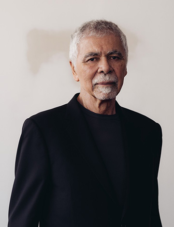
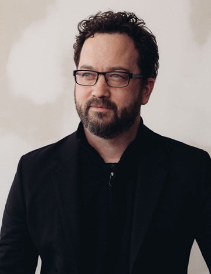

Meet Us
Elizabeth Diller
Elizabeth Diller founded Diller Scofidio + Renfro in 1981 with partner Ricardo Scofidio. Along with Ric, Liz was awarded the MacArthur Foundation "Genius" Grant from 1999 to 2004, the first given in the field of architecture. She is a Professor of Architecture at Princeton University. Liz is a Fellow of the American Academy of Arts and Letters, the American Academy of Arts and Sciences, and the Royal Institute of British Architects (RIBA). Among her many honors are a Lifetime Achievement Award from the National Academy of Design, the Brunner Prize from the American Academy of Arts and Letters, the Barnard Medal of Distinction, and an Honorary Doctorate of the Humanities from Occidental College. In 2009, Liz was selected by Time Magazine as one of the “100 Most Influential People in the World.”
Ricardo Scofidio
Ricardo Scofidio founded Diller Scofidio + Renfro in 1981 with partner Elizabeth Diller and has over 50 years of experience working in architecture. Along with Diller, Scofidio was awarded the MacArthur Foundation "Genius" Grant from 1999 to 2004, the first given in the field of architecture. He is Professor Emeritus of Architecture at Cooper Union School of Architecture. Scofidio is a fellow of the American Academy of Arts and Sciences and of the Royal Institute of British Architects. He has been recognized by the National Academy of Design with a Lifetime Achievement Award, and by the American Academy of Arts and Letters with the Brunner Prize. Scofidio was selected by Time Magazine as one of the “100 Most Influential People in the World.”

Charles Renfro
Charles Renfro joined the studio in 1997 and was named Partner in 2004; he has practiced architecture for over 30 years. He is a Visiting Professor of Curatorial Studies at the School of Visual Arts in New York. He was recently named a National Academy Academician in 2016, and received the 2015 Texas Medal of the Arts Award. He is President of the Board at Storefront for Art and Architecture in New York, and on the board of Spaceworks, dedicated to providing rehearsal and studio space for New York artists.
Benjamin Gilmartin
Benjamin Gilmartin joined DS+R in 2004 and was named Partner in 2015. Ben has been practicing architecture for over 25 years. Ben is currently a Visiting Instructor and Lecturer for the Harvard Graduate School of Design Thesis Program. Ben lectures extensively, presenting the studio’s work to international audiences and has been a longtime contributor to the architecture journal Praxis. In 2015 he delivered the keynote address and served as the Honor Awards Jury Chair for the AIA Colorado and Western Mountain Region Practice and Design Conference, in addition to giving the keynote address for the AIA Wisconsin Convention and Expo. Last year he was also an AIA Minnesota speaker and Honor Awards Jury Member.

Directors
Kazuhiro Adachi - Shop Manager
Gabriela Valero Arias - Director of Communications
Charles Berman - Director of Technology
Rebecca Lopes Cardozo - Senior Business Development Manager
John Cox - Facilities & Archives Manager
Chris Donnell - Director of Information Technology
Steven Forman - Director of Operations
Sean Gallagher - Director of Sustainable Design
Stephen Ludwig - Director of Finance
Toni Skiba - Director of Human Resources
Princples
David Allin
Robert Katchur
Miles Nelligan
Kevin Rice
Associate Princples
Chris Andreacola
Kevin Baker
Holly Deichmann
Matt Ostrow
Anthony Saby
Brian Tabolt
Evan Tribus
Senior Associates
Mario Bastianelli
Jonathon Cielo
Fareez Giga
Chris Hillyard
Michael Hundsnurscher
Jeremy Keagy
Bo Liu
Yushiro Okamoto
Eduardo Ponce
Bryce Suite
Michael Robitz
Michael Samoc
Ellix Wu
Associates
Giannantonio Bongiorno
Jeremy Boon-Bordenave
Ryan Botts
Katrina Collins
Ayat Fadaifard
Kaitlin Faherty
Anahit Hayrapetyan
Dino Kiratzidis
Alex Knezo
Sean Rowe
Maya Shopova
Aidi Su
Eranga De Zoysa
Staff
Charles Blanchard
Alejandro Bonilla
Sandra Bravo
Mary Broaddus
Tom Collins
Felipe Davila
Maur Dessauvage
Ben Dooley
Alex Doyi
Emelia Duserick
Anna Goga
Elzbieta Gutowski
Munjer Hashim
Zach Hoffmann
Mark Jongman-Sereno
Boot Kumthip
Daniel Landez
Magnus Moeschel
Magdalena Naydekova
Ching Ying Ngan
Alyssa Ortiz
Ewa Roztocka
Furui Sun
Lissette Vargas
Alfred Wei
Jeffrey Wong
Ellen Wood
Shiwoo Yu